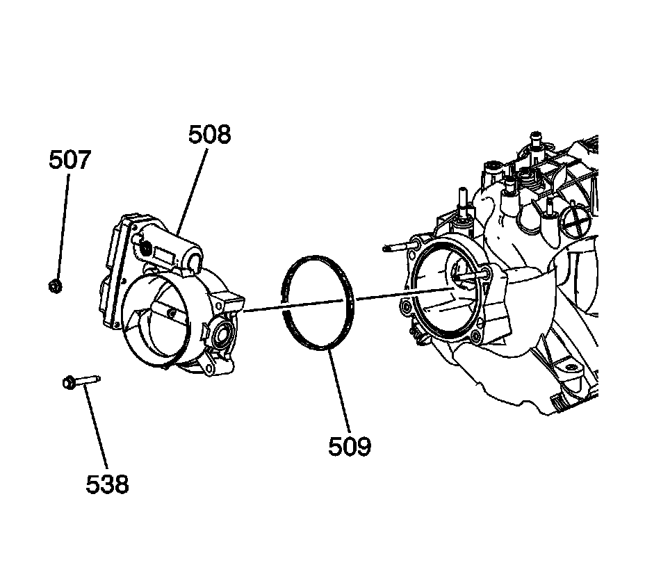

93. Throttle Body Assembly Installation
Throttle Body Installation

Notice: Refer to Fastener Notice.
1. Install the throttle body studs, as required.
Tighten the throttle body studs to 6 N.m (53 lb in).
Important: DO NOT use the throttle body gasket again. Install a NEW gasket during assembly.
2. Install the throttle body gasket (509) to the intake manifold. Align the locating tab of the gasket with the notch in the manifold.
3. Install the throttle body (508), bolts (538), and nuts (507).
Tighten the throttle body nuts and bolts to 10 N.m (89 lb in).